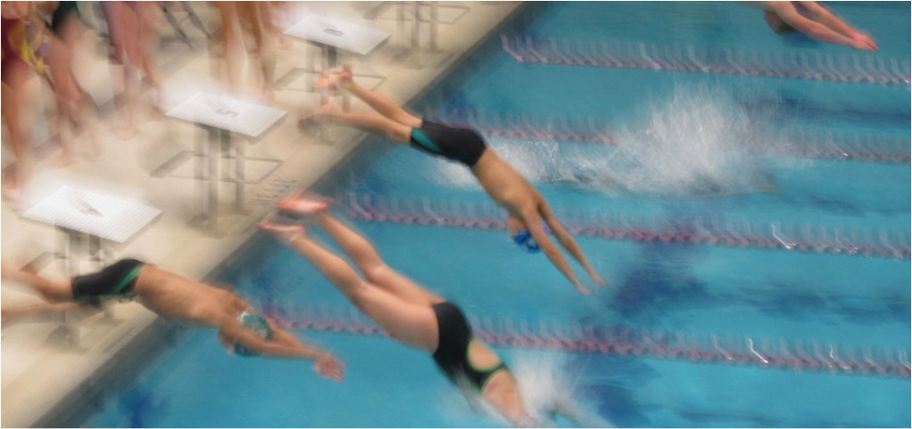

Hello there! My name is Derek Ng, and I am a junior at the Massachusetts Academy of Math and Science.
I am from Littleton, Massachusetts, and I have been living in Massachusetts for all my life.
From kindergarten through tenth grade, I went to the Littleton Public Schools.
Compared to other schools, Littleton is pretty small, but it was a nice place to be.
Coming to Mass Academy caused a big change in my schedule due to the longer school days and longer commute,
but it was definitely a positive change.
Sports

I have been swimming since I was three years old. I have been on many club teams in addition to being on the high school swim team.
Unfortunately, Littleton is too small to have their own swim team, so their swimmers swim for the Bromfield Swim Team.
My favorite events are the breaststroke and the long-distance events. Unfortunately, since I came to Mass Academy,
I am no longer able to swim because I cannot get to practice on time. In addition to swimming,
I also began doing cross country with my school last year. Before last year, I had never run over a mile before.
However, once I began running more often, running the 5K course became much easier.
Music
I have been playing piano since August 2007, which means that this is my eleventh year playing piano. I really enjoy playing!
For the past eight years, I have done this thing called the Guild Auditions.
It isn’t an audition for anything; instead, what I do is I memorize a whole bunch of pieces, and I play them for a judge who gives me feedback on how I could improve.
I have also been playing the clarinet in the Littleton school band since fourth grade.
Random Facts in No Particular Order
I have a sister in tenth grade.
I have no pets.
My last name, Ng, is pronounced like "-ing."
I have never been out of North America.
Orange is my favorite color.
I lived in Maynard, MA before moving to Littleton.